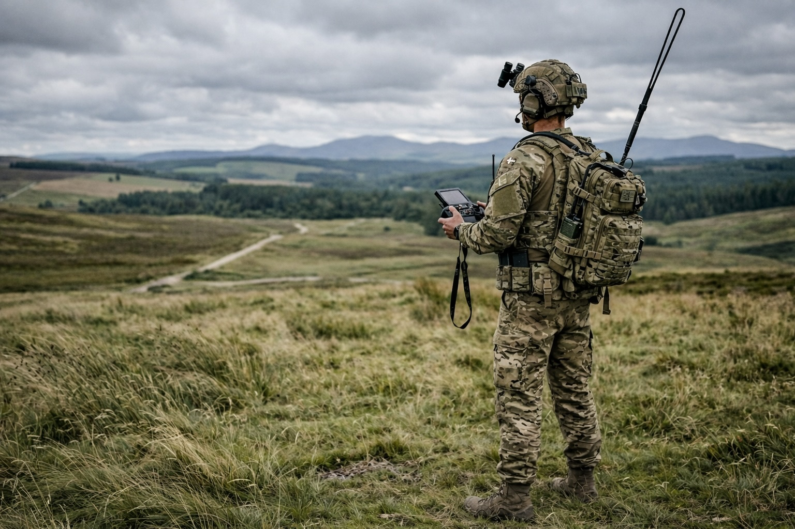
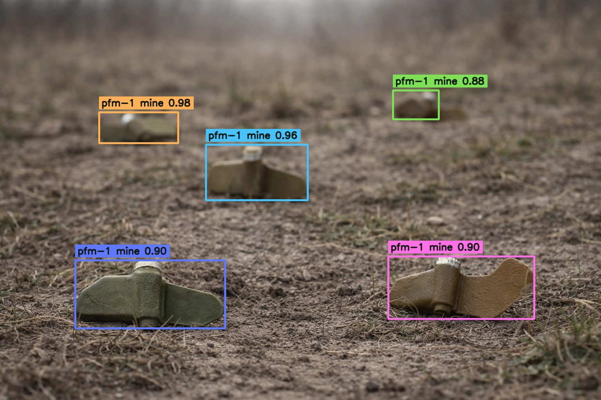

01
Navigation in degraded conditions
Robust autonomy for ground vehicles operating with limited GNSS, degraded communications, and changing terrain conditions.
Defence
Tess Space provides onboard AI navigation, mission planning, and field intelligence for unmanned ground vehicles operating in GNSS-denied, radio-degraded, and low-visibility environments. Our technology supports perception, localization, route execution, remote supervision, and operator-centered autonomy for demanding ground missions.
Why Tess Space
Modern ground operations demand more than remote control. Tess Space combines autonomous navigation, mission software, and field intelligence into one operational stack for unmanned systems working in degraded, uncertain, and high-risk environments.
01
Robust autonomy for ground vehicles operating with limited GNSS, degraded communications, and changing terrain conditions.
02
Operator-centered mission workflows with route approval, remote supervision, and intervention only when needed.
03
Structured sensing and analytics workflows for detection, segmentation, terrain understanding, and operational awareness.
Use cases
Tess Space supports a range of unmanned ground workflows where reliable mobility, sensing, and mission supervision are critical.
01
Enable reliable route execution and mission continuity across rough terrain, remote operating areas, and GNSS-degraded environments.

02
Use integrated sensing and AI workflows for object detection, segmentation, terrain understanding, and operator review.
03
Combine onboard autonomy with mission planning and low-bandwidth operator oversight for more efficient ground operations.

Product stack
Tess Space combines onboard autonomy, mission planning, and field analytics into one connected system for unmanned ground operations.
TITAN
TITAN provides perception, localization, navigation, teleoperation, and sensor payload integration for unmanned ground systems.

TESS DRIVE
TESS DRIVE supports route planning, waypoint missions, operator review, and supervised autonomy across remote and contested operations.

ANALYTICS
Turn mission outputs into structured field intelligence, including detections, segmentation results, mapped observations, and operational datasets.

Partners